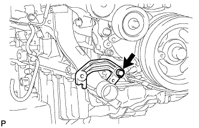
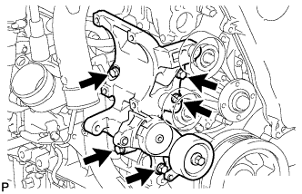
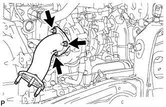
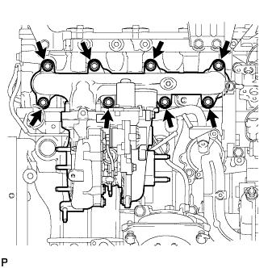
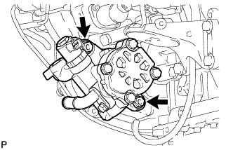
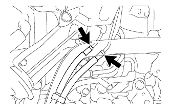
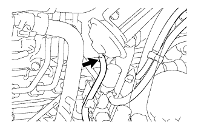
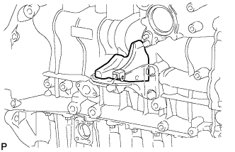

БЛОК ДВИГАТЕЛЯ (для моделей без DPF) > СНЯТИЕ |
| 1. СНИМИТЕ ГЕНЕРАТОР В СБОРЕ |
 |
Выверните 2 болта и снимите генератор.
| 2. СНИМИТЕ КРОНШТЕЙН ГЕНЕРАТОРА |
|  |
Выверните болт и снимите кронштейн генератора.
| 3. СНИМИТЕ КРОНШТЕЙН КРЕПЛЕНИЯ КОМПРЕССОРА № 1 |
|  |
Выверните 5 болтов и снимите кронштейн крепления компрессора № 1.
| 4. СНИМИТЕ ТРУБКУ ВЕНТИЛЯЦИИ КАРТЕРА |
 |
Выверните болт и отсоедините 2 шланга вентиляции картера и трубку вентиляции картера.
| 5. СНИМИТЕ ТРУБКУ ЩУПА ПРОВЕРКИ УРОВНЯ МАСЛА |
Снимите щуп проверки уровня моторного масла.
 |
Выверните 2 болта и снимите трубку щупа проверки уровня моторного масла.
Снимите с трубки щупа проверки уровня моторного масла кольцевое уплотнение.
| 6. СНИМИТЕ ВХОДНОЙ КОЛЕНЧАТЫЙ ПАТРУБОК КОМПРЕССОРА |
 |
Отсоедините 3 зажима жгута проводов.
Выверните болт и снимите кронштейн жгута проводов.
 |
Отсоедините 2 разъема и открепите зажим жгута проводов.
Отсоедините шланг охлаждающей жидкости турбины № 2 и шланг охлаждающей жидкости турбины № 3.
Отверните 2 гайки и снимите входной коленчатый патрубок компрессора и прокладку.
| 7. СНИМИТЕ ТЕПЛОЗАЩИТНЫЙ ЭКРАН ТУРБИНЫ № 1 |
 |
Выверните 2 болта и снимите теплозащитный экран турбины № 1.
| 8. СНИМИТЕ ТЕПЛОЗАЩИТНЫЙ ЭКРАН ВЫПУСКНОГО КОЛЛЕКТОРА № 1 |
Выверните болт и снимите теплозащитный экран выпускного коллектора № 1.
| 9. ОТСОЕДИНИТЕ ШЛАНГ ОХЛАЖДАЮЩЕЙ ЖИДКОСТИ ТУРБИНЫ № 1 |
 |
Отсоедините шланг охлаждающей жидкости турбины № 1 от патрубка охлаждающей жидкости турбины № 1.
| 10. СНИМИТЕ ВЫХОДНОЙ ПАТРУБОК ТУРБИНЫ |
|  |
Отверните 3 гайки и снимите выходной патрубок турбины и прокладку.
| 11. СНИМИТЕ КРОНШТЕЙН ТУРБОНАГНЕТАТЕЛЯ |
 |
Выверните 2 болта, отверните гайку и снимите опору турбонагнетателя.
| 12. СНИМИТЕ ТРУБКУ ПОДВОДА МАСЛА К ТУРБИНЕ В СБОРЕ |
 |
Выверните 2 болта, отверните 2 гайки, выверните пустотелый соединительный болт-штуцер и снимите трубку подвода масла к турбине и 3 прокладки.
| 13. СНИМИТЕ ВЫПУСКНОЙ КОЛЛЕКТОР С ТУРБОНАГНЕТАТЕЛЕМ |
|  |
Отверните 8 гаек и снимите 8 плоских шайб и 8 колец с выпускного коллектора.
Снимите выпускной коллектор с турбонагнетателем и прокладку.
| 14. СНИМИТЕ КРЫШКУ ГОЛОВКИ БЛОКА ЦИЛИНДРОВ № 2 В СБОРЕ |
 |
Выверните 4 болта и снимите крышку головки блока цилиндров № 2.
| 15. СНИМИТЕ ОПОРУ КОЛЕНЧАТОГО ПАТРУБКА КОМПРЕССОРА |
Выверните 2 болта и снимите опору коленчатого патрубка компрессора.
| 16. СНИМИТЕ ВПУСКНОЙ ПАТРУБОК ОХЛАЖДАЮЩЕЙ ЖИДКОСТИ |
Выверните 3 болта и снимите приемник охлаждающей жидкости.
| 17. СНИМИТЕ ТЕРМОСТАТ |
Снимите термостат.
Снимите прокладку с термостата.
| 18. СНИМИТЕ ПЕРЕПУСКНОЙ ПАТРУБОК ОХЛАЖДАЮЩЕЙ ЖИДКОСТИ № 2 В СБОРЕ |
Отсоедините 2 патрубка.
Выверните 2 болта, отверните 2 гайки и снимите перепускной патрубок охлаждающей жидкости № 2.
| 19. СНИМИТЕ ДАТЧИК УРОВНЯ МОТОРНОГО МАСЛА |
Выверните 4 болта и снимите датчик уровня моторного масла.
Срежьте часть прокладки и снимите прокладку с датчика уровня моторного масла.
| 20. СНИМИТЕ ИЗОЛЯТОР КРЫШКИ ГАЗОРАСПРЕДЕЛИТЕЛЬНОГО МЕХАНИЗМА |
 |
Выверните болт и снимите изолятор крышки газораспределительного механизма.
| 21. СНИМИТЕ ВАКУУМНЫЙ НАСОС В СБОРЕ |
 |
Отверните 2 гайки и снимите вакуумный насос и 2 кольцевых уплотнения.
| 22. СНИМИТЕ ЛОПАСТНОЙ НАСОС В СБОРЕ |
|  |
Отверните 2 гайки и снимите лопастной насос и кольцевое уплотнение.
| 23. СНИМИТЕ ДАТЧИК ТЕМПЕРАТУРЫ ОХЛАЖДАЮЩЕЙ ЖИДКОСТИ |
 |
Отсоедините разъем датчика температуры охлаждающей жидкости двигателя.
Снимите датчик температуры охлаждающей жидкости.
Снимите прокладку с датчика температуры охлаждающей жидкости.
| 24. СНИМИТЕ ДАТЧИК ПОЛОЖЕНИЯ РАСПРЕДВАЛА |
 |
Выверните болт и снимите датчик положения распредвала.
| 25. СНИМИТЕ ДАТЧИК ПОЛОЖЕНИЯ КОЛЕНЧАТОГО ВАЛА |
Освободите зажим, выверните болт и снимите датчик положения коленчатого вала.
| 26. СНИМИТЕ КРЫШКУ РЕМНЯ ГАЗОРАСПРЕДЕЛЕНИЯ № 1 |
 |
Выверните 6 болтов и снимите 6 шайб и крышку ремня газораспределения.
| 27. СНИМИТЕ ПРИВОДНОЙ РЕМЕНЬ ГАЗОРАСПРЕДЕЛЕНИЯ |
 |
Поверните коленчатый вал по часовой стрелке и совместите установочные метки, как показано на рисунке.
| *1 | Установочная метка |
 |
Равномерно ослабьте и выверните 2 болта натяжителя приводного ремня газораспределения № 1.
Снимите приводной ремень газораспределения.
 |
| 28. СНИМИТЕ ОПОРНЫЙ РОЛИК ПРИВОДНОГО РЕМНЯ ГАЗОРАСПРЕДЕЛЕНИЯ № 1 В СБОРЕ |
С помощью шестигранного ключа на 10 мм выверните болт и снимите опорный ролик приводного ремня газораспределения № 1 и шайбу.
| 29. СНИМИТЕ ШКИВ КОЛЕНЧАТОГО ВАЛА |
 |
Используя SST, зафиксируйте шкив коленчатого вала и ослабьте болт шкива.
 |
С помощью SST выверните болт шкива и снимите шкив коленчатого вала.
| 30. ОТСОЕДИНИТЕ ПЕРЕПУСКНОЙ ШЛАНГ ОХЛАЖДАЮЩЕЙ ЖИДКОСТИ № 3 (для моделей с системой РОГ с охладителем РОГ) |
 |
Снимите зажим.
Отсоедините перепускной шланг охлаждающей жидкости № 3 от охладителя РОГ.
| 31. ОТСОЕДИНИТЕ ПЕРЕПУСКНОЙ ШЛАНГ ОХЛАЖДАЮЩЕЙ ЖИДКОСТИ № 4 (для моделей с системой РОГ с охладителем РОГ) |
Отсоедините перепускной шланг охлаждающей жидкости № 4 от охладителя РОГ.
| 32. СНИМИТЕ ТОПЛИВНУЮ ТРУБКУ ВЫСОКОГО ДАВЛЕНИЯ (для моделей с системой РОГ) |
 |
Отверните 2 гайки и снимите зажим топливной трубки высокого давления № 3.
 |
Выверните 2 болта и снимите 2 зажима топливной трубки высокого давления № 2.
С помощью разрезной головки на 17 мм ослабьте гайки штуцеров и снимите топливные трубки высокого давления № 1, № 2 и № 3.
| *a | Со стороны форсунки |
| *b | Со стороны топливной системы Common Rail |
| 33. СНИМИТЕ ОПОРУ ПАТРУБКА ПОДАЧИ ВОЗДУХА (для моделей с системой РОГ) |
Выверните 3 болта и снимите опору патрубка подачи воздуха.
| 34. СНИМИТЕ КРОНШТЕЙН КЛАПАНА РОГ (для моделей с системой РОГ) |
Отверните 2 гайки и снимите кронштейн клапана РОГ.
| 35. СНИМИТЕ ЭЛЕКТРОННЫЙ КЛАПАН УПРАВЛЕНИЯ РАЗРЕЖЕНИЕМ В СБОРЕ (для моделей с системой РОГ) |
 |
Отсоедините 2 разъема от электрического клапана управления РОГ и E-VRV.
Освободите зажим жгута проводов.
Отсоедините 5 вакуумных шлангов.
Выверните болт и снимите газовый фильтр вместе с кронштейном газового фильтра.
Выверните 2 болта и снимите кронштейн E-VRV вместе с вакуумным демпфером РОГ.
| 36. СНИМИТЕ ПАТРУБОК ПОДАЧИ ВОЗДУХА № 2 (для моделей с системой РОГ) |
 |
Отверните 3 гайки и снимите патрубок подачи воздуха № 2 и прокладку.
| 37. СНИМИТЕ ПАТРУБОК ПОДАЧИ ВОЗДУХА (для моделей с системой РОГ) |
 |
Выверните 3 болта и снимите патрубок подачи воздуха и 2 прокладки.
| 38. СНИМИТЕ ЭЛЕКТРИЧЕСКИЙ КЛАПАН УПРАВЛЕНИЯ РОГ В СБОРЕ С КЛАПАНОМ РОГ № 2 И ОХЛАДИТЕЛЕМ РОГ (для моделей с системой РОГ с охладителем РОГ) |
 |
Отсоедините вакуумный шланг № 3 от клапана РОГ № 2.
Выверните болт, отверните 2 гайки и снимите электрический клапан управления РОГ вместе с клапаном РОГ № 2 и охладителем РОГ.
Снимите прокладку с блока цилиндров.
| 39. СНИМИТЕ ЭЛЕКТРИЧЕСКИЙ КЛАПАН УПРАВЛЕНИЯ РОГ ВМЕСТЕ С ТРУБОЙ РОГ № 1 В СБОРЕ (для моделей с системой РОГ без охладителя РОГ) |
Отверните 2 гайки и снимите электрический клапан управления РОГ вместе с трубой РОГ № 1 и прокладкой.
| 40. СНИМИТЕ ЭЛЕКТРИЧЕСКИЙ КЛАПАН УПРАВЛЕНИЯ РОГ В СБОРЕ (для моделей с системой РОГ) |
 |
Выверните 2 болта и снимите электрический клапан управления РОГ и прокладку.
| *A | Для моделей с охладителем РОГ |
| *B | Для моделей без охладителя РОГ |
| 41. СНИМИТЕ ПЕРЕХОДНИК КЛАПАНА РОГ (для моделей с системой РОГ с охладителем РОГ) |
 |
С помощью шестигранного ключа на 6 мм выверните 3 болта с шестигранными головками и снимите 3 плоских шайбы, переходник клапана РОГ и прокладку.
| 42. СНИМИТЕ КЛАПАН РОГ № 2 В СБОРЕ (для моделей с системой РОГ с охладителем РОГ) |
С помощью шестигранного ключа на 5 мм выверните болт с шестигранной головкой и снимите клапан РОГ № 2 и прокладку.
| 43. СНИМИТЕ КРОНШТЕЙН КОРПУСА ДРОССЕЛЬНОЙ ЗАСЛОНКИ (для моделей без системы РОГ) |
Отсоедините вакуумный шланг.
Выверните болт и снимите газовый фильтр с кронштейном газового фильтра.
Выверните 2 болта и снимите кронштейн корпуса дроссельной заслонки.
| 44. СНИМИТЕ ТОПЛИВНУЮ ТРУБКУ ВЫСОКОГО ДАВЛЕНИЯ (для моделей без системы РОГ) |
|
Отверните 2 гайки и снимите зажим топливной трубки высокого давления № 3.
|
Выверните 2 болта и снимите 2 зажима топливной трубки высокого давления № 2.
С помощью разрезной головки на 17 мм ослабьте гайки штуцеров и снимите топливные трубки высокого давления № 1, № 2 и № 3.
| *a | Со стороны форсунки |
| *b | Со стороны топливной системы Common Rail |
| 45. СНИМИТЕ ОПОРУ ПАТРУБКА ПОДАЧИ ВОЗДУХА (для моделей без системы РОГ) |
Выверните 3 болта и снимите опору патрубка подачи воздуха.
| 46. СНИМИТЕ ПАТРУБОК ПОДАЧИ ВОЗДУХА № 2 (для моделей без системы РОГ) |
 |
Отверните 3 гайки.
Снимите патрубок подачи воздуха № 2, патрубок подачи воздуха № 1 и 2 прокладки.
| 47. СНИМИТЕ ПАТРУБОК ПОДАЧИ ВОЗДУХА (для моделей без системы РОГ) |
Выверните 3 болта и снимите патрубок подачи воздуха и прокладку.
| 48. СНИМИТЕ ПЛОСКУЮ КРЫШКУ ОТВЕРСТИЯ РОГ № 2 (для моделей без системы РОГ) |
Отверните 2 гайки и снимите прокладку и плоскую крышку отверстия РОГ № 2.
| 49. СНИМИТЕ ВЫПУСКНОЙ ПАТРУБОК ОХЛАЖДАЮЩЕЙ ЖИДКОСТИ |
 |
Выверните 2 болта и снимите прокладку и выпускной патрубок охлаждающей жидкости.
| 50. СНИМИТЕ РАЗЪЕМ СВЕЧИ НАКАЛИВАНИЯ № 1 |
 |
Отверните 4 гайки и снимите 4 уплотнительных шайбы винтов и разъем свечи накаливания № 1.
| 51. СНИМИТЕ ИЗОЛЯТОР ВПУСКНОГО КОЛЛЕКТОРА № 1 |
Снимите изолятор впускного коллектора № 1
| 52. СНИМИТЕ СВЕЧУ НАКАЛИВАНИЯ В СБОРЕ |
С помощью удлиненной торцевой головки на 12 мм снимите 4 свечи накаливания.
| 53. СНИМИТЕ ОПОРУ КОЛЛЕКТОРА С ЭЛЕКТРОВАКУУМНЫМ КЛАПАНОМ |
 |
Отсоедините вакуумный шланг № 1.
|  |
Для моделей с системой РОГ:
Отсоедините вакуумные шланги № 2 и № 3 в сборе.
|  |
Для моделей с охладителем РОГ:
Отсоедините вакуумный шланг № 3.
Отсоедините вакуумные шланги № 3 и № 4 в сборе.
| *A | Для моделей без системы РОГ |
| *B | Для моделей с системой РОГ |
 |
Выверните 2 болта и снимите опору коллектора с электровакуумным клапаном.
| 54. СНИМИТЕ ОПОРУ ВПУСКНОГО ПАТРУБКА |
 |
Выверните болт и снимите опору впускного трубопровода.
| 55. СНИМИТЕ КОМПЛЕКТ ЭЛЕКТРОВАКУУМНОГО КЛАПАНА |
 |
Отсоедините 2 разъема VSV и 3 вакуумных шланга.
Выверните 2 болта и снимите комплект электровакуумного клапана.
| 56. СНИМИТЕ ТОПЛИВНУЮ ТРУБКУ ВЫСОКОГО ДАВЛЕНИЯ № 4 |
 |
Выверните болт и отсоедините зажим топливной трубки высокого давления.
 |
С помощью разрезной головки на 17 мм ослабьте гайки штуцеров и снимите топливную трубку высокого давления № 4.
| *a | Со стороны форсунки |
| *b | Со стороны топливной системы Common Rail |
| 57. СНИМИТЕ ТРУБОПРОВОД ОБРАТНОГО СЛИВА ТОПЛИВА № 2 |
 |
Отсоедините 3 шланга подачи топлива.
Выверните пустотелый соединительный болт-штуцер, 4 болта и снимите трубопровод обратного слива топлива № 2 и прокладку.
| *1 | Пустотелый соединительный болт-штуцер |
| 58. СНИМИТЕ ТЕПЛОЗАЩИТНЫЙ ЭКРАН ВПУСКНОГО КОЛЛЕКТОРА |
Выверните 2 болта и снимите изолятор впускного коллектора.
| 59. СНИМИТЕ ВПУСКНОЙ КОЛЛЕКТОР |
Отсоедините зажим разъема жгута проводов датчика от впускного коллектора.
| *1 | Жгут проводов датчика |
 |
Отсоедините вакуумный шланг от впускного коллектора.
Отверните 2 гайки, выверните 4 болта и снимите впускной коллектор и прокладку.
| 60. СНИМИТЕ ИЗОЛЯТОР ВПУСКНОГО КОЛЛЕКТОРА № 2 |
 |
Снимите изолятор впускного коллектора № 2
| 61. СНИМИТЕ ТРУБКУ ПОДВОДА ТОПЛИВА |
 |
Ослабьте гайки штуцеров и снимите трубку подвода топлива.
| 62. СНИМИТЕ ТОПЛИВНУЮ СИСТЕМУ COMMON RAIL В СБОРЕ |
Выверните 2 болта и снимите топливную систему Common Rail.
| 63. СНИМИТЕ НАГНЕТАЮЩИЙ НАСОС В СБОРЕ |
 |
Выверните 4 болта, указанные стрелками на рисунке.
Снимите фланец зубчатого колеса распредвала № 2 и шкив приводного вала насоса.
 |
Отверните установочную гайку и снимите кольцевое уплотнение, удерживая шкив коленчатого вала с помощью SST.
 |
Ослабьте 2 гайки.
 |
Отсоедините нагнетающий насос от шестерни насоса высокого давления с помощью SST.
Отверните 2 гайки и снимите нагнетающий насос.
Снимите кольцевое уплотнение.
| 64. СНИМИТЕ ЭЛЕМЕНТ ЗАЩИТЫ ТОПЛИВНОГО НАСОСА ВЫСОКОГО ДАВЛЕНИЯ № 1 |
Выверните 2 болта и снимите элемент защиты топливного насоса высокого давления № 1.
| 65. СНИМИТЕ МАСЛЯНЫЙ ФИЛЬТР В СБОРЕ |
 |
Снимите масляный фильтр с помощью SST.
| 66. СНИМИТЕ ВАКУУМНУЮ ТРУБКУ № 3 В СБОРЕ |
Отсоедините вакуумный шланг.
Выверните болт и отсоедините вакуумную трубку № 3.
| 67. СНИМИТЕ ВАКУУМНУЮ ТРУБКУ № 2 В СБОРЕ |
Отсоедините вакуумный шланг.
Отверните 2 гайки и снимите вакуумную трубку № 2.
| 68. СНИМИТЕ КРЫШКУ МАСЛЯНОГО РАДИАТОРА В СБОРЕ |
Выверните 13 болтов и снимите крышку масляного радиатора.
| 69. СНИМИТЕ ВАКУУМНУЮ ТРУБКУ № 1 В СБОРЕ |
 |
Выверните болт, отверните гайку и отсоедините вакуумную трубку № 1.
| 70. СНИМИТЕ КРЫШКУ МАСЛЯНОГО ПОДДОНА № 1 В СБОРЕ |
 |
Выверните 4 болта и снимите крышку масляного поддона № 1.
| 71. СНИМИТЕ ВАКУУМНУЮ ТРУБКУ № 1 |
Выверните болт и отсоедините вакуумную трубку № 1.
| 72. СНИМИТЕ ИЗОЛЯТОР БЛОКА ЦИЛИНДРОВ № 2 |
|  |
Снимите изолятор блока цилиндров № 2.
| 73. СНИМИТЕ ПРАВЫЙ КРОНШТЕЙН ПЕРЕДНЕЙ ОПОРЫ ДВИГАТЕЛЯ № 1 |
 |
Выверните 8 болтов и снимите 2 кронштейна опоры двигателя.
| *A | Для левой стороны |
| *B | Для правой стороны |